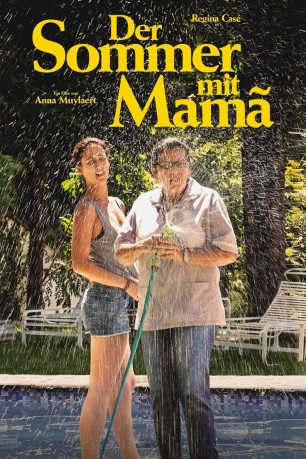

#3300 Der Sommer mit Mamã
 
 IMDB-Wertung: 7.8 / 10
IMDB-Wertung: 7.8 / 10  Metascore: 82
Metascore: 82 
Seit vielen Jahren lebt und arbeitet Val als Haushälterin bei einer wohlhabenden Familie in São Paulo. Pflichtbewusst und mit Hingabe kümmert sie sich um alles und erträgt so manches. Für den 17-jährigen Sohn Fabinho ist sie wie eine zweite Mutter. Eines Tages kommt ihre eigene Tochter Jéssica, die sie als kleines Mädchen bei einer Freundin zurückgelassen hat, zu ihr, um die Aufnahmeprüfung an der Universität zu machen. Und damit gerät nicht nur Vals Weltbild, sondern auch das strenge Machtgefüge im Haus ins Wanken. Denn Jéssica ist nicht bereit, sich den starren Standesregeln unterzuordnen und mischt den Haushalt auf.
Jahr: 2015
Dauer: 111 Minuten
FSK:
Land: Brasilien Studio: Pandora Film VerleihTonspuren:
Untertitel: Deutsch,
Auflösung: 1080p (1920x808) Größe: 4587 MB
Genre: Drama, Komödie
Regisseur: Anna Muylaert
Drehbuch: Anna Muylaert
Soundtrack: Vitor Araújo, Fábio Trummer
Darsteller:
- Regina Casé als Val
- Helena Albergaria als Edna
- Anapaula Csernik als Diléia
- Michel Joelsas als Fabinho
- Camila Márdila als Jéssica
- Karine Teles als Bárbara
- Lourenço Mutarelli als Carlos
- Bete Dorgam als Janaina
- Luis Miranda als Antonio Jardineiro
- Theo Werneck als Vandré
- Luci Pereira als Raimunda
- Hugo Villavicenzio als Peruano
- Roberto Camargo als Reporter
- Alex Huszar als Caveira
- Audrey Lima Lopes als Fabinho Criança
- Thaise Reis als Pamela
- Nilcéia Vicente als Anita
Datei: X:\2015(N-Z)\Sommer mit Mamã, Der (2015, FSK, 1920x808).mkv seit 06.03.2016
Festplatte: HD 2015(A-Z)
 Es gibt insgesamt 161 Filme in der Gruppe '2015(N-Z)'
Es gibt insgesamt 161 Filme in der Gruppe '2015(N-Z)'